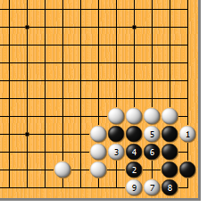
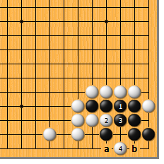
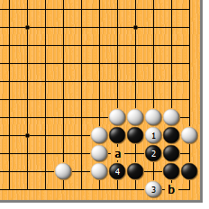
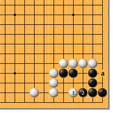
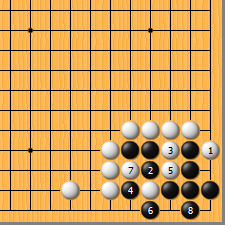
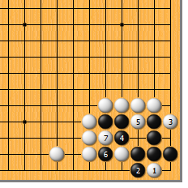
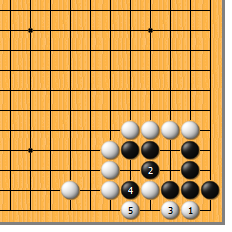

|  |  | |
| 图1 白1单扳，冷静的好手。黑2跳补，白3冲，又是至关重要的次序！黑4如挡，以后的变化就顺水推舟了。白5冲、7点、9爬，黑死。 | 图2 前图的黑4如走本图的1位粘，白2冲即可。黑3挡，白4点，以后黑a则白b，黑死。黑1如单走3位，白仍于4位点。
| |
|  |  | |
| 图3 图1的白3不可走本图的1位冲。否则，黑2挡，白3只好点，被黑4顶，眼看a、b成见合，黑活。白1冲使黑形变好，是失败的根本原因。 | 图4 如果不考虑白a的扳，那么白1的跳总是第一感吧？此变化很复杂。黑2先顶……
| |
|  |  | |
图5 现在，白1必扳。黑2顶，白3冲，黑4打吃，白5也打吃，黑6提，白7位是打吃，不要漏算！黑8位做眼，白提，黑打三还一，活！
| 图6 图4的黑2顶后，白1如点，是骗着！黑2挡，白3扳，以下变化至白7，黑死。问题出在黑2上，应该…… | |
|  | 您的高见 | |
图7 白1点时，黑2顶，强手！白3拉回一子，黑4挖打，白5反打，成劫。成劫就是白失败。 |